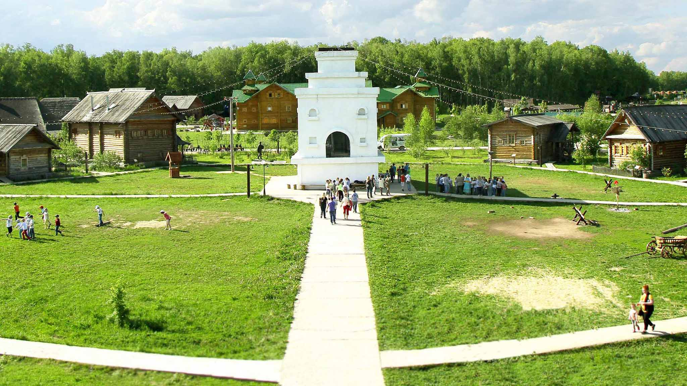
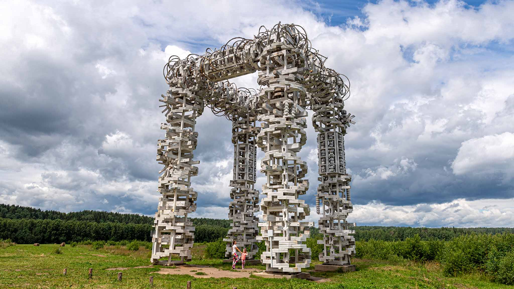
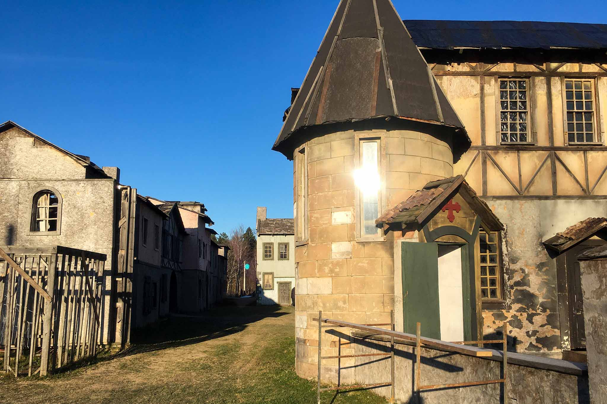

Недалеко от столицы много интересных достопримечательностей, куда удобно съездить за один день. Рассказываем о самых красивых локациях – как добраться на машине, что посмотреть и сколько это стоит. Окрестности Москвы – настоящий кладезь для автотуристов. Чтобы увидеть природные и рукотворные чудеса, садитесь за руль. В Подмосковье неплохие дороги, поэтому доехать до нужного места не составит большого труда.
Этномир
Туристический комплекс расположен в деревне Петрово Калужской области. От МКАД сюда удобно добираться по Минскому шоссе – в сторону Вереи или Киевскому шоссе – в сторону Боровска. После выезда на большое кольцо, трассу А-108, нужно ехать до указателя на Этномир. После поворота до места остается 7 км. Дорога из Москвы занимает около полутора часов.На просторном поле находятся музеи, этнодворы – избы, чумы, юрты, парк развлечений и оригинальные отели. Посмотрите на национальные постройки, народные ремесла, поучаствуйте в мастер-классах и веселых праздниках.
Арт-парк Никола-Ленивец
Из Москвы до крупнейшего в Европе арт-парка около 200 км. От МКАД нужно ехать в сторону Одинцово, Краснознаменска, Кубинки до деревни Никола-Ленивец или мимо Апрелевки, Наро-Фоминска, Обнинска до той же деревни. На дорогу из столицы уходит чуть больше трех часов. Арт-парк площадью 650 га раскинулся вокруг крохотной деревни. В Николо-Ленивце интересно погулять пешком, покататься на велосипеде, посмотреть на необычные арт-инсталляции, заглянуть на пасеку и побывать на мастер-классах, которые проводят талантливые ремесленники.
Киногород Пилигрим Порто
Красивое место для семейного уикэнда и необычных фотографий находится в городском округе Солнечногорск, в 15 км от МКАД. Чтобы попасть в киногород, нужно ехать по Ленинградскому шоссе, на 34 км повернуть к Фирсановке, пересечь ж/д переезд и ехать еще 4 км до усадьбы Середняково. Более 10 лет назад здесь были построены декорации старой Англии для кинофильма «Записки экспедитора тайной канцелярии». Вы сможете сделать памятные фото на фоне колоритных европейских построек XVIII века, крепости и старого парусного фрегата Джека Воробья.